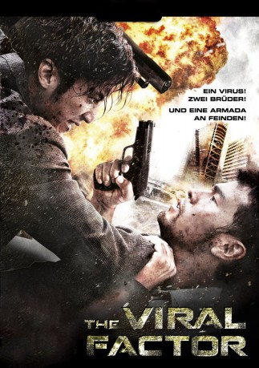
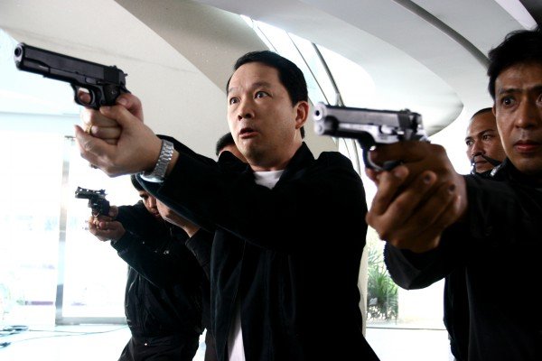

#2040 The Viral Factor
 
 IMDB-Wertung: 6.0 / 10
IMDB-Wertung: 6.0 / 10  Metascore: 32
Metascore: 32 
Eine Eliteeinheit wird beim Auftrag einen Spezialisten für Biochemische Waffen aus dem Land zu schleusen aufgerieben. Jon, der einzige Überlebende, macht sich auf eine atemlose Hetzjagd durch mehrere Länder um die Entführer an der Entwicklung eines tödlichen Virus zu hindern. Plötzlich steht er seinem Bruder, von dessen Existenz er nicht wusste, gegenüber. Doch dieser kämpft auf der falschen Seite. Kann Jon seinen Bruder überzeugen und Asien vor dem tödlichen Virus retten? Im Kampf gegen eine Armada von Gegnern legen sie Kuala Lumpur in Schutt und Asche...
Jahr: 2012
Dauer: 122 Minuten
FSK:
Land: Hong-Kong Studio: Splendid FilmTonspuren:
Untertitel: Deutsch,
Auflösung: 1080p (1920x816) Größe: 12288 MB
Genre: Action, Thriller, Drama
Regisseur: Dante Lam
Drehbuch: Dante Lam, Candy Leung, Wai Lun Ng
Soundtrack: Peter Kam
Darsteller:
 Jay Chou als Jon
Jay Chou als Jon Nicholas Tse als Man Yeung
Nicholas Tse als Man Yeung Peng Lin als Rachel
Peng Lin als Rachel Andy On als Sean
Andy On als Sean-  Kai Chi Liu als Man Tin
- Jawed El Berni als Tyler's Henchman
- Issam M. Husseini als Jordanian Doctor
- Jared Robinsen als Tyler
 Ron Smoorenburg als Tyler's Henchman
Ron Smoorenburg als Tyler's Henchman- Andrew Dasz als Villain , uncredited
- Steven Dasz als Jordanian Mercenary , uncredited
- Brad Dirk Martin als Russian Hitman , uncredited
 Bing Bai als Ice
Bing Bai als Ice- Carl Ng als Ross
- Tin Chiu Hung als Mark
- Philip Keung als Russell
- Crystal Lee als Man Cheung Sing
- Elaine Jin als Jon's Mother
- Deep Ng als Man Yeung's former partner
- Man Biu Lee als
Datei: X:\HD-Eastern-Modern(N-Z)\Viral Factor, The (2012, FSK, 1920x816).mkv seit 25.09.2015
Festplatte: HD Eastern+Western
 Es gibt insgesamt 76 Filme in der Gruppe 'HD-Eastern-Modern(N-Z)'
Es gibt insgesamt 76 Filme in der Gruppe 'HD-Eastern-Modern(N-Z)'